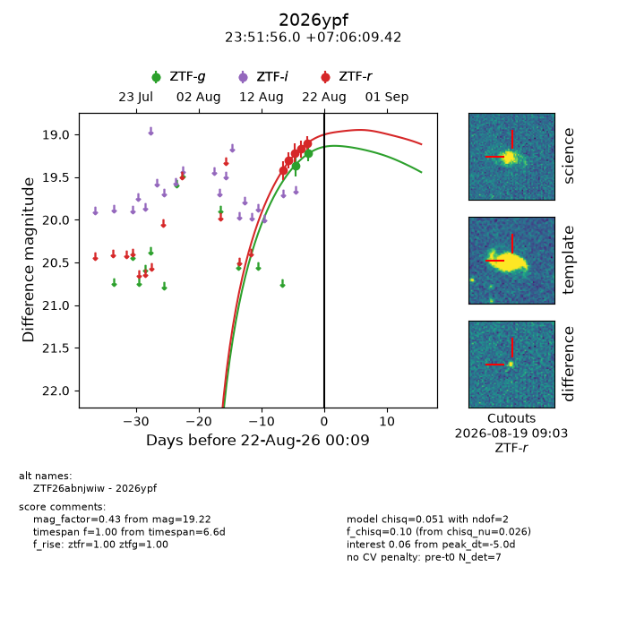
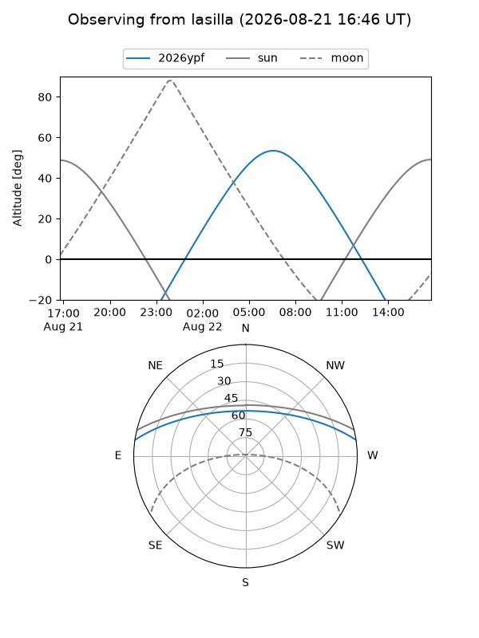
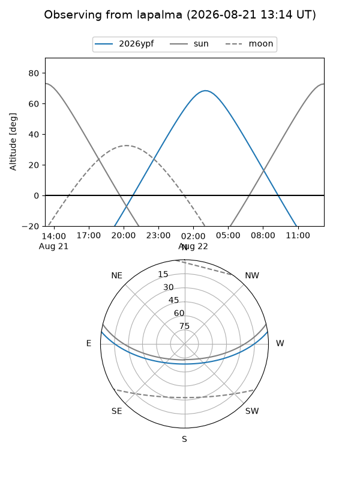
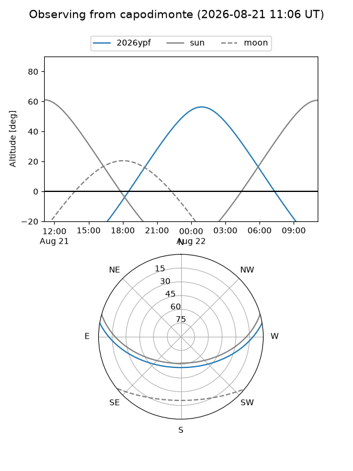
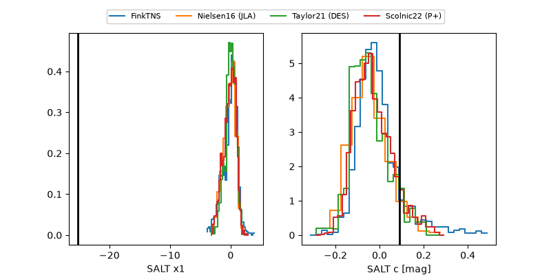

2026ypf
Target 2026ypf at 2026-08-22 12:08
Aliases and brokers:
FINK-ZTF: ztf.fink-portal.org/ZTF26abnjwiw
Lasair-ZTF: lasair-ztf.lsst.ac.uk/objects/ZTF26abnjwiw
ALeRCE-ZTF: alerce.online/object/ZTF26abnjwiw
YSE-PZ: ziggy.ucolick.org/yse/transient_detail/2026ypf
TNS name: wis-tns.org/object/2026ypf
Direct TNS query: direct search
alt names
ZTF26abnjwiw (ztf,fink_ztf)
2026ypf (tns,yse)
Coordinates:
equatorial (ra, dec) = 357.9835,+7.10262
equatorial (HMS+DMS) = 23:51:56.03,+07:06:09.42
galactic (l, b) = (97.9733,-52.86139)
Flags:
TNS type: nan
peak dt: -4.5
Photometry:
last ztfg=19.22, ztfr=19.10
2 ztfg, 5 ztfr detections
Lightcurve

Visibility



Additional plots
